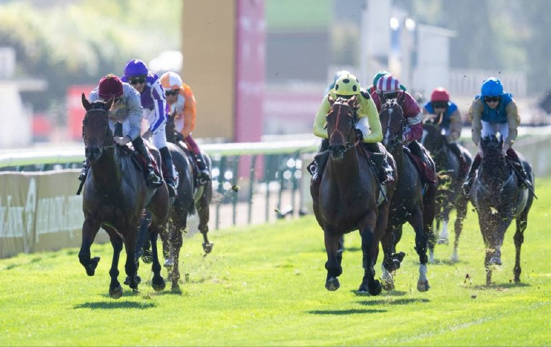

El Curragh acoge el fin de semana de las Tattersalls Irish Guineas con Gstaad como gran reclamo
El hipódromo del Curragh disputa este sábado 23 y domingo 24 de mayo el Tattersalls Irish Guineas Festival, una de las grandes citas clásicas del calendario europeo de galope llano. El sábado se corre la Tattersalls Irish 2000 Guineas, sobre la milla, y el domingo la Tattersalls Irish 1000 Guineas, ambas pruebas…

El hipódromo del Curragh disputa este sábado 23 y domingo 24 de mayo el Tattersalls Irish Guineas Festival, una de las grandes citas clásicas del calendario europeo de galope llano. El sábado se corre la Tattersalls Irish 2000 Guineas, sobre la milla, y el domingo la Tattersalls Irish 1000 Guineas, ambas pruebas reservadas a tres años.
La principal atracción de la jornada del sábado es la presencia confirmada de Gstaad, segundo en la 2000 Guineas inglesa de Newmarket. El potro, una de las referencias actuales de su generación en la milla, llega al Curragh como uno de los favoritos al título irlandés, junto a otros candidatos del entorno de Aidan O'Brien y de otros entrenadores británicos.
El programa de la 1000 Guineas del domingo se construye en torno a la ganadora de la versión inglesa, True Love, aunque la lista de declaraciones se concretará en las horas previas. El festival es además la antesala natural de la temporada de Royal Ascot, dado que los binomios que destacan en el Curragh suelen orientarse después hacia la St James's Palace Stakes y la Coronation Stakes, ambas en la cita inglesa de mediados de junio.
El Curragh es la sede principal del galope llano irlandés y reúne las cinco clásicas del país. Las jornadas de Guineas suelen marcar el primer pico real de la temporada doméstica antes de los grandes premios de verano en Irlanda.
— Redacción de Galope al Día